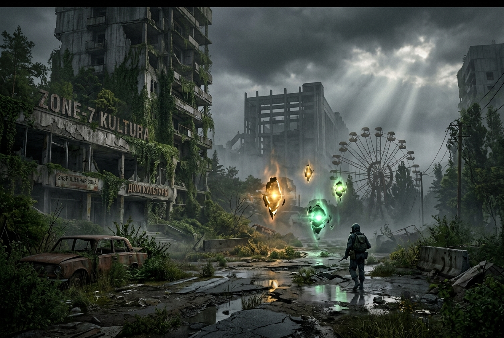
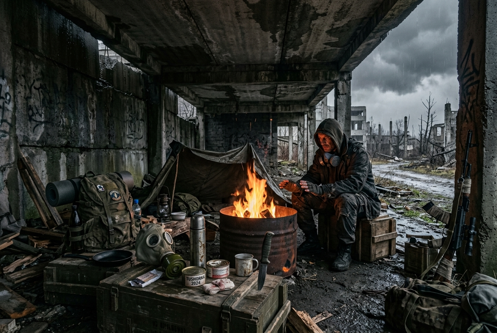
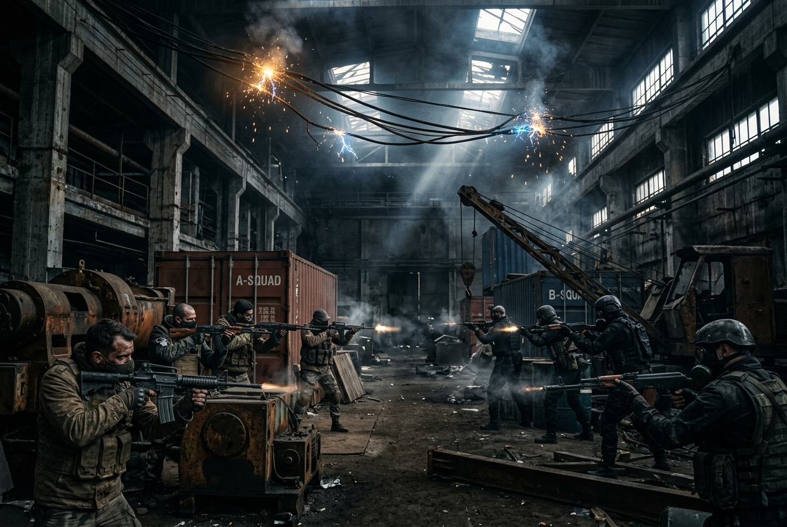

Unofficial Fan Project • Survarium Universe
⚠ Неофіційний фанатський контент — не пов'язаний з VG Entertainment Ltd.
Ми не можемо повернути Survarium у тому вигляді, в якому він був, але прагнемо відтворити його атмосферу та дух у новому світі.
Неофіційний некомерційний фанатський проєкт, натхненний всесвітом Survarium
Obriy — це неофіційний фанатський проєкт, натхненний всесвітом Survarium. Проєкт не пов'язаний з VG Entertainment Ltd. та не є офіційним продовженням або доповненням гри Survarium.
Ми не можемо повернути Survarium у тому вигляді, в якому він був, але прагнемо відтворити його атмосферу та дух. Це некомерційна спроба оживити знайомі ідеї, переосмислити їх і перенести у нові реалії, де виживання, боротьба та дослідження загублених у хаосі територій знову стають невід'ємною частиною життя.
Цей проєкт — для всіх, хто пам'ятає Survarium і хоче ще раз відчути його магію, хоч і в трохи іншому світі. Ми спробуємо зачепити частинку душі кожного, хто колись був частиною цієї історії.
📋 Цей проєкт створено відповідно до UGC Guidelines компанії VG Entertainment Ltd. Survarium™ є власністю VG Entertainment Ltd.

Три ключових елементи, що формують досвід виживання у світі Obriy
Загублені території, занедбані бункери та руїни колишньої цивілізації. Кожна зона зберігає свої секрети, аномалії та артефакти, що чекають на відважних дослідників.

Радіація, мутанти та суворий клімат — головні вороги кожного сталкера. Збирай ресурси, створюй спорядження та адаптуйся, щоб протриматися ще один день.

Ворожі угруповання борються за контроль над зонами та ресурсами. Обирай свою сторону, формуй загони та захищай свою територію від ворогів та мародерів.
Світ, яким ми його знали, залишився в минулому.
Третя світова війна назавжди змінила обличчя планети. Зруйновані міста, радіаційне забруднення, аномалії та мутації стали наслідками людських рішень, які поставили під загрозу саме існування цивілізації.
Там, де колись вирувало життя, тепер панують руїни й тиша. Природа поступово повертає собі втрачені території, поглинаючи залишки людського світу. Проте за її відродженням приховуються небезпеки, до яких людство виявилося неготовим.
Ті, кому вдалося вижити, змушені пристосовуватися до нової реальності. Боротьба за території, ресурси та власне існування породжує нові протистояння. Людство, яке пережило глобальну катастрофу, так і не змогло знайти порозуміння навіть перед загрозою спільного зникнення.
Але чи справді світ приречений повторювати помилки минулого?
ОБРІЙ - це не лише межа між землею та небом. Це символ невідомого майбутнього, до якого прямує людство. Майбутнього, яке залежить від його сьогоднішніх рішень.
Адже навіть після найтемнішої ночі над обрієм неодмінно зійде сонце. Та що саме освітять його перші промені - залишки зруйнованого світу чи початок нового життя?
Стань частиною команди Obriy. Ділися ідеями, слідкуй за розробкою та знаходь однодумців у нашому Discord.
Запускач встановить і оновить гру автоматично
Запускач автоматично завантажить, встановить та оновлюватиме гру. Просто запусти — і зануримось у світ Obriy.